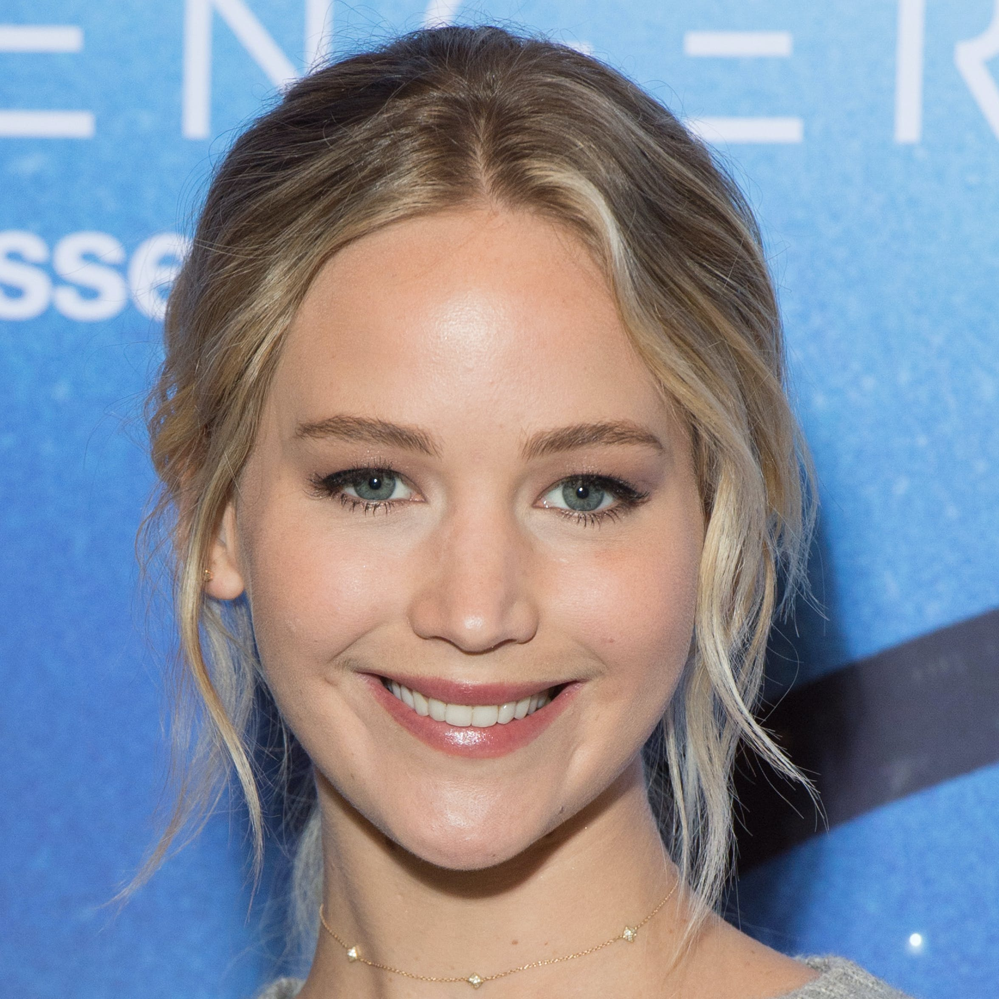
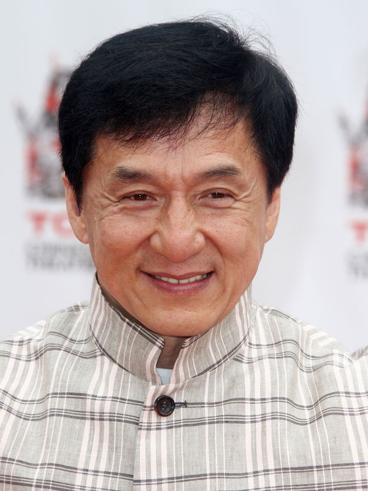

Animaux :
- Étant le plus rapide
- Le plus rapide dans les airs
- Le plus rapide en mer
- Étant le plus long
- Le plus mortel
- Ayant le plus gros cerveau
- Étant le plus fort
- Étant le plus lourd
- Sautant le plus loin
- Parcourant le plus de distance dans sa vie
- Ayant le plus long pénis par rapport à sa taille
- Avec la piqûre la plus douloureuse
- Ayant les plus grands yeux
- La plus longue durée de vie
- Volant le plus longtemps
Nature :
- Record du col de montagne le plus élevée
- Record de la route la plus haute
- Record de l'endroit habité le plus froid
- Record de la mine la plus profonde
- Record du point sur la terre le plus profond
- Record de la plus épaisse couche de glace
- Record de l'endroit ou les températures sont les plus basses
- Record de la terre la plus septentrionale du monde
- Record de l'endroit habité le plus chaud
- Record de les parois rocheuse les plus grandes
- Record de la cavité naturelle la plus profonde
- Record de l'endroit habité le plus isolé de la planète
- Record de l'endroit avec la température la plus chaude
- Record de la ville la plus haute du monde
- Record de l'endroit le plus sec
Sport :
- Record du tour monde en 45 jours
- Record du plus haut saut à la perche
- Record de médailles olympiques en natation
- Record du plus grand gagnant du Tour de France
- Record du plus rapide sur 100 et sur 200 mètres
- Record du nombre de buts inscrit en une année
- Record de buts en liga
- Record sur 400 mètres
- Record de points marqué durant sa carrière
- 5 Champions Leagues consécutifs
- Record de victoire en une saison NBA
- 5 buts en 9 minutes
- Record de trophée au football en tout
- un but à 91,9 mètres
- 1500 mètres dame en 3 min 50 s 07
Particularités :
- La plus grande bouche
- Record des ongles les plus long du monde
- Le plus long nez au monde
- L'homme le plus tatoué, Lucky Diamond Rich
- Les plus longs cheveux du monde
- Les plus longs poils d’oreilles
- La plus grande langue
- La plus longue barbe
- Les plus grands globes oculaires
- Les plus longues jambes
- Les plus gros biceps du monde
- La femme la plus petite du monde
- La taille la plus fine du monde
- La fille la plus poilue du monde
- La plus grosse poitrine naturelle du monde
Insolite :
- Record des plus grosses paire de cornes
- Record du plus jeune DJ de club
- Record du plus grand nombre de rubiks cube résolu
- Record de l'œuvre vendue la plus chère aux enchères
- Record du plus long séjour au sommet d'un mât
- Record de la plus grande moto pilotable
- Record du nombre de buts marqué par un joueur au mondial de football
- Record de la plus grande réplique de décor en Lego
- Record: la « vampire mexicaine »
- Record du youtuber le mieux payé au monde
- Record: cimetière de Wadi al-Salaam
- Record de la plus jeune personne à avoir fusionné 2 atomes de deutérium
- Record du plus grand orchestre
- Record de la plus jeune femme à barbe
- Record de la plus veille personne a faire un saut en parachute
Célébrité :
- Jennifer Aniston
- Cristiano Ronaldo
- Ariana Grande
- Eminem
- Ellen DeGeneres
- Jennifer Lawrence
- Justin Bieber
- Taylor Swift
- Alex Rodriguez
- Jackie Chan
- Dolly Parton
- Katy Perry
- Ed Sheeran
- Sam Smith
- Hiroyuki Terada
Jeux Vidéos
- Un salaire conséquent
- Un budget digne d'un film d'hollywood
- Un succés Mondial
- une partie de jeu vidéo de 572h
- Une partie de JOUST en version arcade
- 138h et 34 secondes de JUST DANCE 2015
- Du Call Of Duty pendant des heures
- La collection ultime
- Un rassemblement pour la bonne cause
- Un score à 19 chifffres sur GIGA WING 2
- 169 Victoires d'affilées sur STREET FIGHTER IV
- Super Mario Bros. en moins de 5min
- Speedrun de GTA, 53 MINUTES ET 29 SECONDES PAR MHMD_FVC
- Speedrun de SUPER MEAT BOY,17 MINUTES ET 43 SECONDES PAR VORPAL
- Speedrun de SKYRIM, 35 MINUTES ET 20 SECONDES PAR I_NEED_A_DOCTOR
- Speedrun de DOOM 2 : HELL ON EARTH, 19 MINUTES ET 59 SECONDES PAR ZERO-MASTER
- Speedrun de DISHONORED, 33 MINUTES ET 59 SECONDES PAR MRWALRUS
- Speedrun de PORTAL 1, 7 MINUTES ET 54 SECONDES PAR IMANEX
- Speedrun de ZELDA : OCARINA OF TIME, 17 MINUTES ET 45 SECONDES PAR SKATER82297
- Speedrun de HALF-LIFE, 20 MINUTES ET 41 SECONDES PAR QUADRAZID
Record Célébrités
Jennifer Aniston :
L’actrice a atteint le million d’abonnés en un temps record – 5 heures et 16 minutes – en faisant ses débuts sur Instagram le 15 octobre 2019.
Le 17 octobre, elle comptait 10,9 millions d’abonnés sur son compte et le 19 octobre, 20,1 millions.
Cristiano Ronaldo :
C’est l’athlète ayant le plus grand nombre d’abonnés sur Twitter. Le 17 octobre 2019, il avait 80,5 millions d’abonnés sur le site de microblogage.

Ariana Grande :
La musicienne est l’artiste féminine ayant comptabilisé le plus grand nombre de lectures en continu en un an.
La chanteuse a été diffusée plus de trois milliards de fois sur Spotify en 2018
Eminem :
Il détient le record du plus grand nombre de mots dans un titre à succès. Sa chanson Rap God en contient 1 560, avec en moyenne 4,28 mots par seconde.

Ellen DeGeneres :
Avec 78,8 millions d’abonnés sur Twitter le 17 octobre 2019, elle est la personnalité télé la plus suivie sur le site de microblogage.
Jennifer Lawrence :
Elle est la vedette féminine de film d’action la plus rentable au monde, avec ses rôles dans la série Hunger Games (2012-15) et dans la franchise X-Men (2011-14).
Justin Bieber :
Il est le premier artiste à avoir occupé simultanément les trois premières positions au UK Singles Chart, le classement hebdomadaire des singles au Royaume-Uni,
avec ses titres Love Yourself (no. 1), Sorry (no. 2) et What Do You Mean? (no. 3).
Taylor Swift :
Elle détient le record du plus gros revenu annuel pour une pop star féminine, avec 170 millions de dollars américains gagnés en 2016.
Le 7 septembre 2019, ses revenus complets s’élevaient à 185 millions, selon Forbes.

Alex Rodriguez :
Avec 25 grands chelems à son actif, le joueur de baseball de la Ligue majeure détient le record du plus grand nombre de grands chelems
(coup de circuit frappé lorsque les trois buts sont occupés par des coureurs) en carrière.
Jackie Chan :
Il est l’acteur contemporain ayant réalisé le plus grand nombre de cascades.
Dolly Parton :
Elle détient le record du plus grand nombre de décennies – six (des années 1960 aux années 2010) – avec un titre placé dans le top 20 U.S. Hot Country Songs,
le classement musical hebdomadaire du magazine américain Billboard.
Katy Perry :
Elle est la première à avoir atteint les 100 millions d’abonnés sur Twitter, le 16 juin 2017. Le 17 octobre 2019, elle comptait 108 millions d’abonnés sur le site.
Ed Sheeran :
Il est l’artiste masculin ayant réalisé le plus de ventes en un temps record pour un album de musique pop avec son troisième album studio, /br>÷ (Divide), qui s’est écoulé à 672 000 exemplaires la semaine de sa sortie.
Sam Smith :
Il détient le record du plus grand nombre de semaines dans le top 10 britannique pour un premier album.
Son album In the Lonely Hour (2014) est resté 69 semaines consécutives au classement.
Hiroyuki Terada :
Il détient le record du plus grand nombre de carottes coupées les yeux bandés en 30 secondes. Le record du célèbre chef cuisinier est de 88.